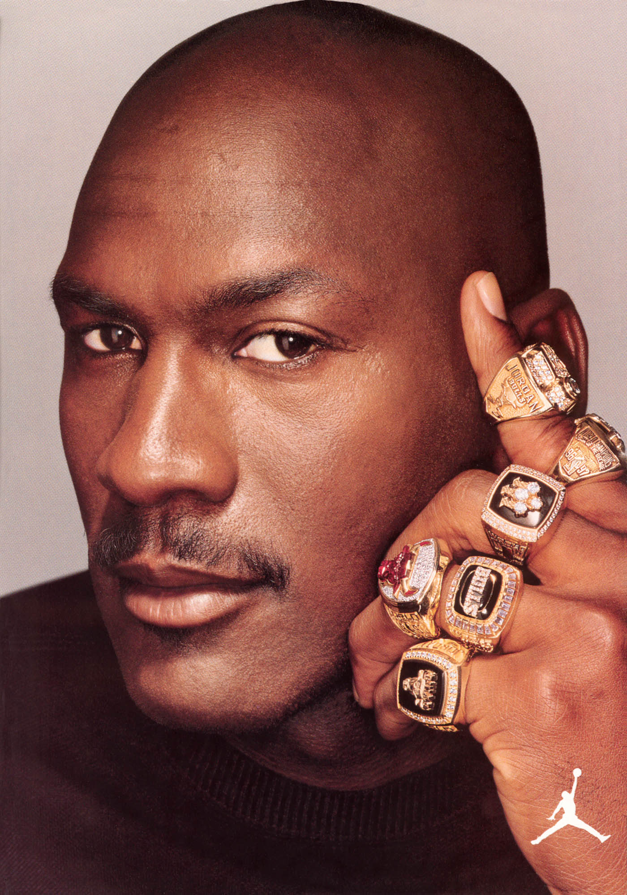

Tribute to Michael Jordon
A look into the achivements of Michael Jordan

Career Timeline
Michael Jordan was born on February 17, 1963 in Brooklyn, New York
1963
Michael Jeffrey Jordan Is Born in Brooklyn, New York
1984
Michael Jordan Enters the NBA Draft and Is Selected by the Chicago Bulls
1986
Michael Jordan Scores 63 Points Against the Boston Celtics in Round One of the NBA Playoffs
1981
Michael Jordan Earns a Basketball Scholarship to the University of North Carolina at Chapel Hill
1985
Michael Jordan Gains Favor In His First Season and Wins Rookie of the Year
1988
Michael Jordan Averages 32.5 Points Per Game, Winning the MVP Award and Defensive Player of the Year